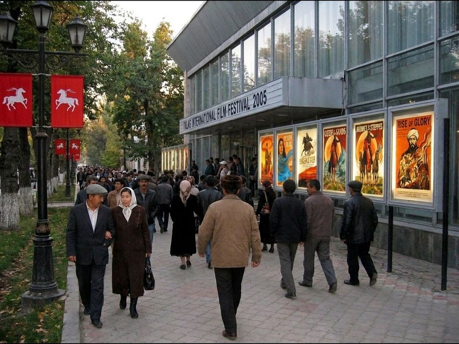

The Irad Film Society began as a club of people who did not want the Talasfilm prints to rot.
It was started in 1993 by projectionists, two film editors and a schoolteacher who met at the Oktyabr cinema on Sunday mornings. They watched what was left in the cans, wrote down what was missing and started asking for it back.
The first Talas International Film Festival was held in September 1995. It has been held every other September since, in the odd years, always with a strong Russian-language programme, because that is what our audience asks for.

2005 was our best year: eleven days, forty films, guests from Moscow, Almaty and Seoul, and the rearing horse on every poster in Talas. We have not had a year like it since, and we say so honestly. The festival is smaller now, but it is still here.The society’s members kept a page on the Attelkom server from 1999; you can still read it as it was in 2004, at our first website.